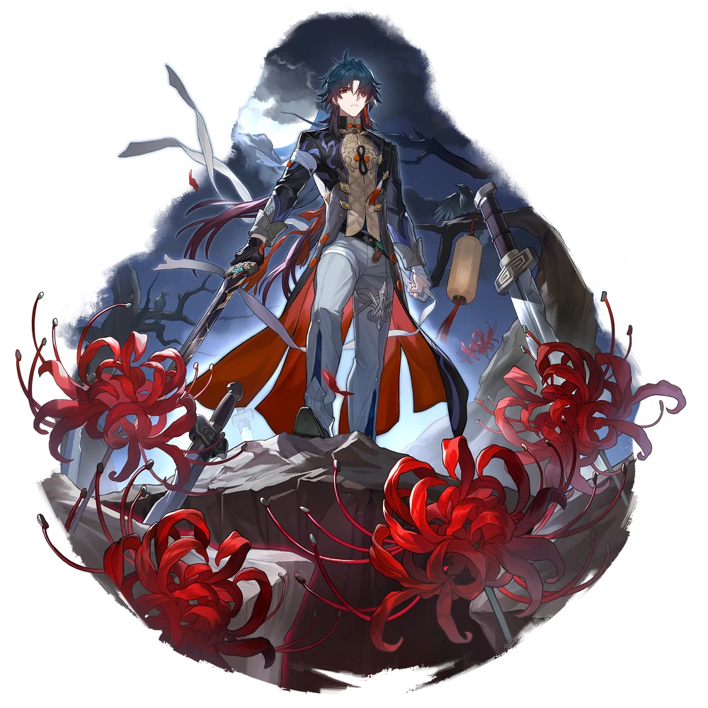

| Nome | Blade |
|---|---|
| Elemento | Vento | Raridade | ✦ ✦ ✦ ✦ ✦ |
| Caminho | A Destruição |
| Sexo | Homem |
| Especie | Humano |
| Facção | Stellaron Hunters | Mundo | ??? | Como obter | Ainda não pode ser obtido(a) | Data de Lançamento | Ainda sera lançado | Adicionado pela primeira vez | Versão 0.70 |
Ascensões e estatísticas
| Fase de Ascensão | Level | Base HP | Base ATK | Base DEF | Base SPD |
|---|---|---|---|---|---|
| 0✦ | 1/20 | ??? | ??? | ??? | ??? |
| 20/20 | ??? | ??? | ??? | ??? | |
| 1✦ | 20/30 | ??? | ??? | ??? | ??? |
| 30/30 | ??? | ??? | ??? | ??? | |
| 2✦ | 30/40 | ??? | ??? | ??? | ??? |
| 40/40 | ??? | ??? | ??? | ??? | |
| 3✦ | 40/50 | ??? | ??? | ??? | ??? |
| 50/50 | ??? | ??? | ??? | ??? | |
| 4✦ | 50/60 | ??? | ??? | ??? | ??? |
| 60/60 | ??? | ??? | ??? | ??? | |
| 5✦ | 60/70 | ??? | ??? | ??? | ??? |
| 70/70 | ??? | ??? | ??? | ??? | |
| 6✦ | 70/80 | ??? | ??? | ??? | ??? |
| 80/80 | ??? | ??? | ??? | ??? |
| Nível | Custo de Evolução | Materiais de Ascensão do Personagem | Materiais Necessários |
|---|---|---|---|
| 0 → 1 ✦ |  4,000 4,000 |
5 | |
| 1 → 2 ✦ | 8,000 |
10 | |
| 2 → 3 ✦ | 16,000 |
3 | 6 |
| 3 → 4 ✦ | 40,000 |
7 | 9 |
| 4 → 5 ✦ | 80,000 |
20 | 6 |
| 5 → 6 ✦ | 160,000 |
35 | 9 |
Habilidades de combate
| Icone | Tipo | Nome | Descrição | Marcação | Energia | Resistência DMG |
|---|---|---|---|---|---|---|
| ATK básico | Fragmento de Espada | Causa Wind DMG igual a 50%-130% do ATK de Blade a um único inimigo. | Alvo único | |||
| Skill | Hellscape | Consome 30% do HP máximo de Blade para avançar imediatamente a ação em 100%. Além disso, o DMG aumenta em 12% e o ATK básico "Shard Sword" é aprimorado para "Forest of Swords". Se o HP for insuficiente, após usar a Skill, o HP do Blade será reduzido para 1. Esta Skill não pode regenerar Energia | Melhorar | |||
| Ultimate | Sentença de morte | Causa 28,8% do ATK de Blade mais 72% de Max HP como Wind DMG para um inimigo e alvos adjacentes, e 14,4% do ATK de Blade mais 36% do Max HP como Wind DMG para alvos adjacentes. Além disso, define o HP atual do Blade para 50% deste HP máximo. | Explosão | |||
| Talento | Presente de Shuhu | Toda vez que ele recebe DMG, Blade ganha 1 pilha de carga por 3 turnos, acumulando até 5 vezes. Quando o máximo de cargas for atingido, consuma todas as cargas e imediatamente libere um ataque de acompanhamento em todos os inimigos, causando 21% do ATK de Blade mais 54% da perda de HP enquanto acumula cargas como Wind DMG . Em seguida, restaure o HP de Blade em 30% de seu HP máximo. | ||||
| Técnica | Vento Karma | Imediatamente ataca o inimigo. Depois de entrar na batalha, consome 20% do HP máximo de Blade e causa 40% do HP máximo de Blade como Wind DMG a todos os inimigos. |
Eidolons
| Icone | Nome da habilidade | Nivel | Descrição |
|---|---|---|---|
| Rejeitado pela morte, infectado com a vida | 1 | Durante a batalha, toda vez que o HP de Blade fica abaixo de 50%, o HP máximo aumenta em 20%. Acumula até 2 vezes(2). | |
| Sonhos perdidos e incontáveis arrependimentos | 2 | Enquanto "Forest of Swords" estiver ativo, se o HP de Blade for restaurado, o DMG de seu próximo ataque aumentará em 15%. Este efeito acumula até 3 vez(es). | |
| Fundição de Aço e Moagem de Grãos | 3 | Nível final +2 até um máximo de Lv. 15. ATK Básico Lv. +1, até um máximo de Lv. 10. | |
| Espada Suprema, Inferno Oculto | 4 | Ao usar o Ultimate, se o HP do Blade estiver acima de 50%, causa 100% do HP causado pelo Ultimate ao inimigo e alvos adjacentes como DMG de Vento Adicional. | |
| Sentença de Morte, Enfrentando o Karma | 5 | Habilidade Lv, +2 até um máximo de Lv. 15. ATK Básico Lv. +1, até um máximo de Lv. 10. | |
| Corpo e alma | 6 | Ao ser atingido por um golpe mortal, em vez de ficar incapacitado, o HP de Blade é reduzido a 1 e seu Talento é acionado imediatamente. Este efeito só pode ser ativado 1 vez a cada 3 turno(s) |
Traços
| Custo Total (1 → 6 para rastreamento de ATK básico) |
|---|
| Custo total (1 → 10 para um rastreamento) |
|---|